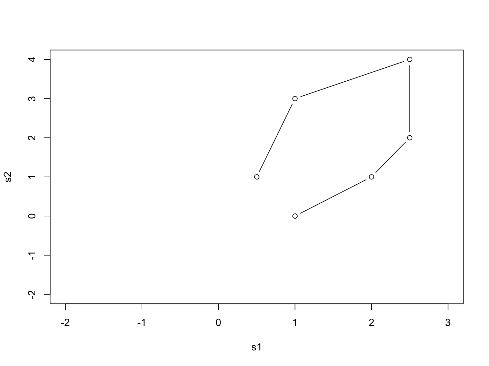
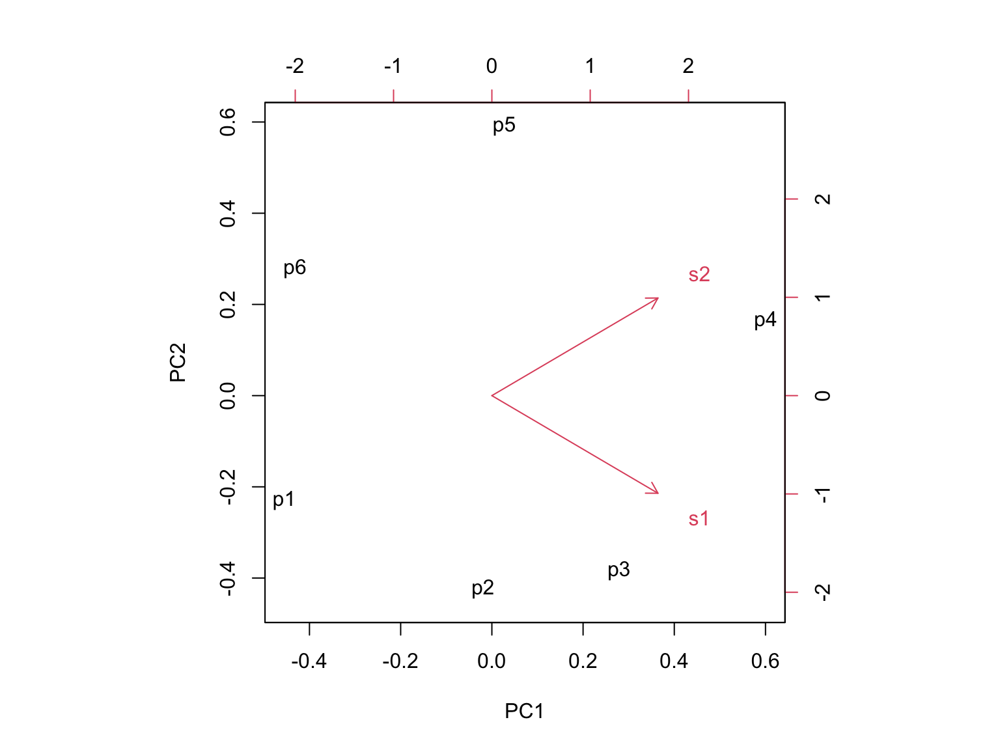
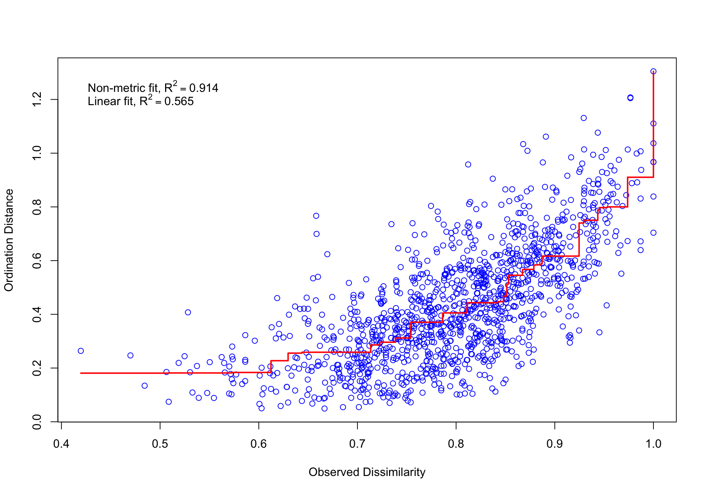

Introdução às Ordenações
Simplificando Dados Complexos de Vegetação
Pedro Higuchi
UDESC - Universidade do Estado de Santa Catarina
2025-11-12
O que vamos aprender ?
Ordenações Não-Restritas (exploração):
- PCA, DCA, NMDS, PCoA
Ordenações Restritas (teste de hipóteses):
- RDA e CCA
Análises Avançadas:
- Partição da variância
- Testes multivariados (PERMANOVA, betadisper)
Prática: Dados reais da Floresta com Araucária
Objetivo: Do básico ao avançado em análise multivariada! 📊→📈
O Problema
Imagine que você mediu:
50 parcelas de floresta
90 espécies diferentes de árvores
10 variáveis de solo em cada parcela
Pergunta: Como visualizar tudo isso em um gráfico? 🤔
Resposta: Não dá! São muitas dimensões…
Solução: ORDENAÇÃO = resumir em 2 ou 3 dimensões que você pode ver!
Analogia: Índice de Vegetação (NDVI)
Sensor multiespectral:
- 🔴 Vermelho (RED)
- 🌿 Infravermelho (NIR)
- 🔵 Azul, 🟢 Verde
- Outras bandas…
→ Múltiplas dimensões
Índice NDVI:
\[NDVI = \frac{NIR - RED}{NIR + RED}\]
- Único número (-1 a +1)
- Resume “saúde vegetal”
→ 10+ bandas → 1 índice
NDVI resume bandas espectrais | PCA resume dados ambientais por exemplo
10 Variáveis ambientais → PC1 e PC2 🌲
O que descobrimos com ordenação?
Parcelas parecidas ficam próximas no gráfico
Parcelas diferentes ficam distantes
Gradientes ambientais (fertilidade, altitude, umidade)
Grupos naturais de parcelas ou espécies
Fatores mais importantes que explicam as diferenças
Nossos Dados Exemplo
Floresta Ombrófila Mista (Floresta com Araucária)
Vegetação:
- 50 parcelas
- 90 espécies de árvores
- 2.837 indivíduos
- Espécie principal: Araucaria angustifolia
Ambiente:
- pH do solo
- Nutrientes (P, K, Ca, Mg)
- Matéria orgânica
- Altitude
- Declividade
Dois Tipos de Ordenação
Hoje vamos focar em ordenação NÃO-RESTRITA (exploração inicial)
PCA - Análise de Componentes Principais
Quando usar:
- Dados ambientais (solo, clima, topografia)
- Gradientes curtos (< 3 SD)
- Poucos zeros na matriz de dados
Ideia básica: Encontra as direções de maior variação nos dados
O que são Gradientes Curtos? 📏
Gradiente < 3 SD = Condições ambientais homogêneas
EXEMPLO 1: Parcelas em encosta sul
- Condições similares
- Variação pequena
P1: pH 5.2, Ca 4.5, Alt 920m
P2: pH 5.5, Ca 5.1, Alt 935m
P3: pH 5.0, Ca 4.2, Alt 915m✅ pH: 5.0-5.5 (variação 0.5)
✅ Ca: 4.2-5.1 (variação 0.9)
✅ Altitude similar
EXEMPLO 2: Topo, enconsta e baixada
- Condições muito diferentes
- Variação grande
P1: pH 6.5, Ca 12.5, Alt 850m
P15: pH 5.5, Ca 5.2, Alt 950m
P30: pH 4.0, Ca 1.2, Alt 1100m❌ pH: 4.0-6.5 (variação 2.5)
❌ Ca: 1.2-12.5 (variação 11.3)
❌ Altitude muito diferente
Entendendo o SD (Desvio Padrão)
SD = Standard Deviation - unidade que mede a mudança nas condições ambientais
Interpretação prática com variáveis de solo:
- < 3 SD = Condições variam pouco → ambiente homogêneo
- > 4 SD = Condições variam muito → ambiente heterogêneo
Entendendo o SD (Desvio Padrão)
Exemplo comparativo:
Gradiente CURTO (2.5 SD):
pH: 5.0 → 5.5 → 5.2 → 5.3 (variação: 0.5 unidades)
Cálcio: 4.2 → 5.1 → 4.5 → 4.8 (variação: 0.9 cmolc/kg)
Altitude: 915 → 935 → 920 → 928 (variação: 20 m)
→ Condições SIMILARES ✅ Use PCA/RDA
Gradiente LONGO (5.0 SD):
pH: 6.5 → 5.5 → 4.0 (variação: 2.5 unidades)
Cálcio: 12.5 → 5.2 → 1.2 (variação: 11.3 cmolc/kg)
Altitude: 850 → 950 → 1100 (variação: 250 m)
→ Condições MUITO DIFERENTES ❌ Use DCA/CCA/NMDS⚠️ Limitação Importante do PCA
PCA funciona mal com dados de vegetação porque:
- Muitas espécies ausentes = muitos zeros (50-80% da matriz)
- Distribuições assimétricas
- Pressuposição de linearidade não atendida
PCA - Exemplo Visual Passo a Passo
# Criar dados simples (6 parcelas x 2 espécies)
raw <- matrix(c(1, 2, 2.5, 2.5, 1, 0.5, 0, 1, 2, 4, 3, 1), nrow = 6)
colnames(raw) <- c("s1", "s2")
rownames(raw) <- c("p1", "p2", "p3", "p4", "p5", "p6")
raw s1 s2
p1 1.0 0
p2 2.0 1
p3 2.5 2
p4 2.5 4
p5 1.0 3
p6 0.5 1Matriz de dados: 6 parcelas × 2 espécies
PASSO 1: Dados Originais
PASSO 2: Dados Padronizados

PASSO 3: PCA (Eixos Rotacionados)
PC1 PC2
p1 -1.35966283 -0.4017469
p2 -0.05820754 -0.7424332
p3 0.83271234 -0.6725842
p4 1.79348126 0.2881847
p5 0.08149056 1.0394065
p6 -1.28981378 0.4891730
PASSO 4: Biplot
PCA com Dados Reais - Solo da FOM
# Carregar dados de solo
amb <- read.table("../data/environmental_data.csv",
header = TRUE, sep = ";", dec = ",",
row.names = 1)
# Ver as primeiras linhas
head(amb, 3) arg ph P K Na MO hal Al Ca Mg CTCph7 CTCef V
1 31 3.9 2.0 54 0 4.2 24.4 11.2 0.8 0.5 25.83846 37.03846 5.567133
2 27 4.2 1.7 95 0 7.3 19.4 6.1 2.8 1.2 23.64359 29.74359 17.948162
3 24 4.8 5.6 125 0 9.1 9.7 1.6 9.2 1.8 21.02051 22.62051 53.854599
SB cd cotmedia desmax decmed
1 1.438462 94.28 1000.25 4 8
2 4.243590 94.54 1009.25 5 9
3 11.320513 93.24 1014.50 4 9Executando PCA
Call:
rda(X = amb, scale = TRUE)
Partitioning of correlations:
Inertia Proportion
Total 18 1
Unconstrained 18 1
Eigenvalues, and their contribution to the correlations
Importance of components:
PC1 PC2 PC3 PC4 PC5 PC6 PC7
Eigenvalue 8.8268 2.1053 1.47089 1.21485 1.13823 0.79450 0.69897
Proportion Explained 0.4904 0.1170 0.08172 0.06749 0.06323 0.04414 0.03883
Cumulative Proportion 0.4904 0.6073 0.68905 0.75654 0.81978 0.86392 0.90275
PC8 PC9 PC10 PC11 PC12 PC13
Eigenvalue 0.48973 0.42928 0.30179 0.23173 0.164537 0.080657
Proportion Explained 0.02721 0.02385 0.01677 0.01287 0.009141 0.004481
Cumulative Proportion 0.92996 0.95381 0.97057 0.98345 0.992587 0.997068
PC14 PC15
Eigenvalue 0.043958 0.0088237
Proportion Explained 0.002442 0.0004902
Cumulative Proportion 0.999510 1.0000000O que são Autovalores? 🔢
Autovalores medem quanto de variação cada eixo captura dos dados.
Executando PCA
- Os loadings mostram a correlação entre cada variável original e os componentes principais!
PC1 PC2
arg -0.2414695 -0.243726277
ph 1.2062885 0.120043974
P 0.6868190 -0.534306781
K 0.6857349 0.370407138
Na 0.8049970 -0.249722086
MO 0.6818968 -0.659944087
hal -1.1726161 -0.357639041
Al -1.0782134 -0.130638700
Ca 1.0193841 -0.387144031
Mg 0.9149885 -0.515201427
CTCph7 -0.6620791 -0.929701668
CTCef -0.9614735 -0.722142386
V 1.2510646 -0.026751844
SB 1.1238388 -0.445070486
cd -0.8864982 0.168675978
cotmedia -0.5742349 -0.546073313
desmax 0.7780676 -0.086667502
decmed 0.8180250 -0.008115826
attr(,"const")
[1] 5.449632Visualizar PCA - Solo

Interpretação: Setas vermelhas = variáveis de solo | números = parcelas
Como Interpretar o Biplot?
Setas longas = variável importante
Setas curtas = variável pouco importante
Setas no mesmo sentido = correlacionadas (ex: Ca e Mg)
Setas opostas = correlação negativa (ex: pH e Al)
Parcelas próximas = solo parecido
Parcelas distantes = solo diferente
NMDS - Para Dados de Vegetação
Quando a PCA não funciona bem…
Problemas com dados de vegetação:
- Muitas espécies ausentes (zeros)
- Distribuições muito assimétricas
- Gradientes muito longos
Solução: NMDS (Non-metric Multidimensional Scaling)
NMDS - O Mais Flexível
Non-metric Multidimensional Scaling
Vantagens:
- Funciona com qualquer tipo de dado
- Não assume relações lineares
- Muito usado em ecologia moderna
- Robusto e confiável
Avaliação: Stress (quanto menor, melhor)
NMDS na Prática
# Fazer NMDS
# Carregar dados de vegetação
veg <- read.table("../data/vegetation_data.csv",
header = TRUE, sep = ";", dec = ",")
# Criar matriz: parcelas (linhas) x espécies (colunas)
matriz <- as.data.frame.matrix(table(veg$PC, veg$Species))
# Criar variável de exposição
# 17 parcelas Norte + 33 parcelas Sul = 50 parcelas total
exposicao <- c(rep("Norte", 17), rep("Sul", 33))
nmds_result <- metaMDS(matriz,
k = 2, # 2 dimensões
distance = "bray", # índice de Bray-Curtis
trymax = 100) # tentativasWisconsin double standardization
Run 0 stress 0.2953069
Run 1 stress 0.2969591
Run 2 stress 0.2946395
... New best solution
... Procrustes: rmse 0.0265171 max resid 0.08937196
Run 3 stress 0.3060852
Run 4 stress 0.30622
Run 5 stress 0.3114901
Run 6 stress 0.2946375
... New best solution
... Procrustes: rmse 0.0005369238 max resid 0.002179912
... Similar to previous best
Run 7 stress 0.3029819
Run 8 stress 0.3056149
Run 9 stress 0.2989338
Run 10 stress 0.2991449
Run 11 stress 0.3021164
Run 12 stress 0.2965245
Run 13 stress 0.3017007
Run 14 stress 0.299367
Run 15 stress 0.2992786
Run 16 stress 0.2939446
... New best solution
... Procrustes: rmse 0.01549058 max resid 0.07858078
Run 17 stress 0.3017203
Run 18 stress 0.2951847
Run 19 stress 0.3045032
Run 20 stress 0.3011684
Run 21 stress 0.2992507
Run 22 stress 0.3023938
Run 23 stress 0.3076788
Run 24 stress 0.3036767
Run 25 stress 0.2941875
... Procrustes: rmse 0.01824387 max resid 0.07602765
Run 26 stress 0.2991516
Run 27 stress 0.3002002
Run 28 stress 0.3010642
Run 29 stress 0.3192588
Run 30 stress 0.2976894
Run 31 stress 0.3026143
Run 32 stress 0.299426
Run 33 stress 0.3014875
Run 34 stress 0.3029777
Run 35 stress 0.299644
Run 36 stress 0.2941058
... Procrustes: rmse 0.01625912 max resid 0.07704
Run 37 stress 0.296844
Run 38 stress 0.3010604
Run 39 stress 0.3168067
Run 40 stress 0.3096472
Run 41 stress 0.3052914
Run 42 stress 0.2981839
Run 43 stress 0.2980335
Run 44 stress 0.2999218
Run 45 stress 0.3067347
Run 46 stress 0.2990168
Run 47 stress 0.300044
Run 48 stress 0.3008567
Run 49 stress 0.2962373
Run 50 stress 0.2984549
Run 51 stress 0.2977994
Run 52 stress 0.30012
Run 53 stress 0.3054439
Run 54 stress 0.3003888
Run 55 stress 0.3038481
Run 56 stress 0.2995684
Run 57 stress 0.3082838
Run 58 stress 0.310071
Run 59 stress 0.3012018
Run 60 stress 0.3038585
Run 61 stress 0.3100108
Run 62 stress 0.3085963
Run 63 stress 0.2942815
... Procrustes: rmse 0.02157841 max resid 0.07954243
Run 64 stress 0.3050001
Run 65 stress 0.3057248
Run 66 stress 0.2994357
Run 67 stress 0.2939443
... New best solution
... Procrustes: rmse 0.0004467395 max resid 0.002287483
... Similar to previous best
*** Best solution repeated 1 timesStress: 0.294
✗ Ruim, não usar!
Visualizar NMDS
fig.nmds <- ordiplot(nmds_result, type = "none", font = 6, font.lab = 6, cex.axis = 1.2,
cex.lab = 1.2, xlim = c(-2, 1), ylim = c(-1.5, 1))
text(fig.nmds, "sites", col = "black", font = 6)
stems <- colSums(matriz)
sel <- orditorp(nmds_result, dis = "sp", priority = stems, pcol = "black", pch = "+",
cex = 0.7)Visualizar Stress plot
Testando Diferenças Entre Grupos no PCA
Pergunta: Os setores (Norte/Sul) diferem ao longo do gradiente ambiental?
# Extrair escores do PC1
eixosPCA <- scores(pca_solo, choices = 1:2, display = "sites")
PCA1 <- eixosPCA[,1]
# Verificar normalidade
shapiro.test(PCA1)
Shapiro-Wilk normality test
data: PCA1
W = 0.98054, p-value = 0.575Se p > 0.05 → dados normais ✓ | Se p < 0.05 → usar teste não-paramétrico
Comparando Setores - Teste t
Welch Two Sample t-test
data: PCA1 by exposicao
t = -3.8256, df = 36.281, p-value = 0.0004957
alternative hypothesis: true difference in means between group Norte and group Sul is not equal to 0
95 percent confidence interval:
-1.1656423 -0.3580773
sample estimates:
mean in group Norte mean in group Sul
-0.5028275 0.2590323 p < 0.05? → Setores SÃO diferentes ambientalmente! ✓
Visualizando Grupos no NMDS
fig <- ordiplot(nmds_result, type = "none")
# Parcelas por grupo
points(fig, "sites", pch = 19, col = "blue",
select = exposicao == "Norte")
points(fig, "sites", pch = 1, col = "red",
select = exposicao == "Sul")
# Espécies
sp.names <- make.cepnames(colnames(matriz))
stems <- colSums(matriz)
orditorp(nmds_result, "sp", label = sp.names,
priority = stems, pch = "+", pcol = "grey")
legend("topleft", legend = c("Norte", "Sul"),
pch = c(19, 1), col = c("blue", "red"))Como o Ambiente Explica a Vegetação?
Função envfit() ajusta variáveis ambientais ao NMDS
# Ajustar variáveis ambientais à ordenação
env_fit <- envfit(nmds_result, amb, permutations = 999)
env_fit
***VECTORS
NMDS1 NMDS2 r2 Pr(>r)
arg 0.67585 -0.73704 0.0673 0.212
ph 0.45901 0.88843 0.2624 0.003 **
P 0.61134 0.79137 0.0938 0.092 .
K -0.47699 0.87891 0.0624 0.216
Na 0.82661 0.56278 0.2196 0.004 **
MO 0.98554 0.16946 0.2197 0.006 **
hal -0.60607 -0.79541 0.1138 0.050 *
Al -0.18755 -0.98226 0.1054 0.066 .
Ca 0.63691 0.77094 0.0059 0.869
Mg 0.93145 0.36386 0.3095 0.001 ***
CTCph7 -0.38939 -0.92107 0.0841 0.102
CTCef -0.30622 -0.95196 0.1237 0.037 *
V 0.62692 0.77908 0.1250 0.041 *
SB 0.84558 0.53384 0.0582 0.246
cd -0.32094 -0.94710 0.1566 0.027 *
cotmedia 0.42751 -0.90401 0.0734 0.153
desmax 0.66670 0.74532 0.2349 0.001 ***
decmed 0.47218 0.88150 0.2873 0.001 ***
---
Signif. codes: 0 '***' 0.001 '**' 0.01 '*' 0.05 '.' 0.1 ' ' 1
Permutation: free
Number of permutations: 999r² = força da correlação | p < 0.05 = variável significativa
Visualizar NMDS + envfit
fig <- ordiplot(nmds_result, type = "none")
# Parcelas por grupo
points(fig, "sites", pch = 19, col = "blue",
select = exposicao == "Norte")
points(fig, "sites", pch = 1, col = "red",
select = exposicao == "Sul")
# Espécies
sp.names <- make.cepnames(colnames(matriz))
orditorp(nmds_result, "sp", label = sp.names,
priority = colSums(matriz), pch = "+",
pcol = "grey", cex = 0.6)
# Vetores ambientais (p < 0.05)
plot(env_fit, p.max = 0.05, col = "darkgreen",
cex = 0.8, lwd = 2)
legend("topleft", legend = c("Norte", "Sul"),
pch = c(19, 1), col = c("blue", "red"))Interpretando o envfit
Vetores ambientais:
- Direção → gradiente da variável
- Comprimento → força da correlação
- Ângulo → correlação entre variáveis
Exemplo: - Parcelas Norte → solos ácidos, baixo Ca/Mg - Parcelas Sul → solos férteis, alto Ca/Mg - pH e Altitude explicam composição de espécies
NMDS Simplificado (sem espécies)
fig <- ordiplot(nmds_result, type = "none")
# Apenas parcelas
points(fig, "sites", pch = 19, col = "blue",
select = exposicao == "Norte")
points(fig, "sites", pch = 1, col = "red",
select = exposicao == "Sul")
# Apenas vetores significativos
plot(env_fit, p.max = 0.05, col = "darkgreen",
cex = 1, lwd = 2.5)
legend("topleft", legend = c("Norte", "Sul"),
pch = c(19, 1), col = c("blue", "red"))Gráfico mais limpo para visualizar padrões ambientais! 📊
PERMANOVA - Teste Multivariado
Testa se composição de espécies difere entre grupos
# PERMANOVA
permanova_result <- adonis2(matriz ~ exposicao,
method = "bray",
permutations = 999)
permanova_resultPermutation test for adonis under reduced model
Permutation: free
Number of permutations: 999
adonis2(formula = matriz ~ exposicao, permutations = 999, method = "bray")
Df SumOfSqs R2 F Pr(>F)
Model 1 1.1617 0.08451 4.431 0.001 ***
Residual 48 12.5840 0.91549
Total 49 13.7457 1.00000
---
Signif. codes: 0 '***' 0.001 '**' 0.01 '*' 0.05 '.' 0.1 ' ' 1p < 0.05? → Composição É diferente entre Norte/Sul!
R² → % da variação explicada pela exposição
Teste de Homogeneidade de Dispersão
O que é betadisper?
Verifica se os grupos têm dispersão (variabilidade) semelhante
Por que isso importa?
- PERMANOVA pode detectar diferenças de dispersão OU de composição
- Precisamos separar esses dois efeitos!
Análise de Dispersão (betadisper)
# Calcular distâncias de Bray-Curtis
dist_bray <- vegdist(matriz, method = "bray")
# Teste de dispersão entre grupos
dispersao <- betadisper(dist_bray, exposicao)
# Testar significância
anova(dispersao)Analysis of Variance Table
Response: Distances
Df Sum Sq Mean Sq F value Pr(>F)
Groups 1 0.083215 0.083215 15.642 0.0002513 ***
Residuals 48 0.255363 0.005320
---
Signif. codes: 0 '***' 0.001 '**' 0.01 '*' 0.05 '.' 0.1 ' ' 1
Interpretando o betadisper
Resultado do ANOVA:
- p > 0.05 → Dispersões semelhantes ✅
- PERMANOVA confiável!
- Diferença é de composição
- p < 0.05 → Dispersões diferentes ⚠️
- Atenção! Grupos têm variabilidades distintas
- PERMANOVA pode estar detectando isso, não composição
Exemplo Visual - Dispersões Iguais

Grupos separados, mas com variabilidade similar
Exemplo Visual - Dispersões Diferentes

Norte muito variável, Sul homogêneo → problema!
Resumo betadisper
O que faz: Testa se grupos têm variabilidade semelhante
Quando usar: Sempre DEPOIS do PERMANOVA significativo
Interpretação conjunta:
| PERMANOVA | betadisper | Conclusão |
|---|---|---|
| p < 0.05 | p > 0.05 | ✅ Composição diferente |
| p < 0.05 | p < 0.05 | ⚠️ Dispersão diferente |
| p > 0.05 | qualquer | Grupos não diferem |
PCoA - Análise de Coordenadas Principais
Principal Coordinates Analysis (PCoA)
Também conhecida como MDS (Metric Multidimensional Scaling)
O que faz: Representa relações entre parcelas usando qualquer índice de dissimilaridade
Propriedade importante: Transforma dissimilaridades em distâncias Euclidianas
Como PCoA funciona?
Entrada: Matriz de dissimilaridades entre parcelas
Saída: Eixos ortogonais (independentes) ordenados por importância
Relação com outros métodos:
- PCoA com distância Euclidiana = PCA
- PCoA com distância qui-quadrado ≈ CA
- PCoA com Bray-Curtis = ideal para vegetação
PCoA na Prática
# Calcular matriz de dissimilaridade
dist_bray <- vegdist(matriz, method = "bray")
# Executar PCoA
pcoa_result <- cmdscale(dist_bray, k = 2, eig = TRUE)
# Ver autovalores (% de variação)
eigenvalues <- pcoa_result$eig
var_explained <- eigenvalues / sum(eigenvalues) * 100
cat("Eixo 1:", round(var_explained[1], 1), "%\n")Eixo 1: 15 %Eixo 2: 11 %⚠️ Problema: Autovalores Negativos
Quando usar índices não-métricos (ex: Bray-Curtis puro):
- Podem aparecer autovalores negativos
- Eixos não podem ser plotados!
Soluções:
- Transformar para métrico:
sqrt()no Bray-Curtis ✅ - Correções: Lingoes ou Cailliez
- Usar NMDS (aceita qualquer índice)
Visualizar PCoA
scores_pcoa <- pcoa_result$points
plot(scores_pcoa[,1], scores_pcoa[,2],
xlab = paste0("PCoA1 (", round(var_explained[1], 1), "%)"),
ylab = paste0("PCoA2 (", round(var_explained[2], 1), "%)"),
main = "PCoA - Composição de Espécies",
pch = 19,
col = ifelse(exposicao == "Norte", "blue", "red"),
cex = 1.5)
legend("topright", legend = c("Norte", "Sul"),
col = c("blue", "red"), pch = 19)PCoA vs NMDS - Diferenças Fundamentais
| Característica | PCoA | NMDS |
|---|---|---|
| Algoritmo | Analítico (único) | Iterativo (múltiplos) |
| Usa valores | Dissimilaridades reais | Rankings |
| Reprodutibilidade | Sempre igual | Pode variar |
| Nº de eixos | Dado pelos dados | Você escolhe (k) |
| % explicada | Sim (autovalores) | Não |
| Qualidade | Autovalores | Stress |
| Espécies | Projetar depois | Projetar depois |
Relação PCoA → NMDS
Conceito importante:
NMDS geralmente usa PCoA como configuração inicial
→ NMDS otimiza a solução do PCoA iterativamente
→ Tenta representar mais variação em menos eixos
Na prática: NMDS “melhora” o PCoA quando stress < 0.20
Quando usar cada um?
Use PCoA quando:
✓ Precisar de % variação explicada
✓ Quiser solução única/reprodutível
✓ Dataset grande (>100 parcelas)
✓ Análise rápida
✓ Comparar com PCA
✓ Necessidade de eixos ortogonais
Use NMDS quando:
✓ Quiser melhor representação visual
✓ Índice não-métrico (sem transformar)
✓ Publicar figura principal
✓ Stress < 0.20
✓ Dataset pequeno/médio
Dica: Rode os dois! NMDS otimiza PCoA quando funciona bem
Comparação Visual
par(mfrow = c(1, 2))
# PCoA
plot(scores_pcoa[,1], scores_pcoa[,2],
xlab = paste0("PCoA1 (", round(var_explained[1], 1), "%)"),
ylab = paste0("PCoA2 (", round(var_explained[2], 1), "%)"),
main = "PCoA - Solução Analítica",
pch = 19,
col = ifelse(exposicao == "Norte", "blue", "red"))
# NMDS
plot(nmds_result, type = "n", main = paste0("NMDS - Stress = ",
round(nmds_result$stress, 3)))
points(nmds_result, display = "sites", pch = 19,
col = ifelse(exposicao == "Norte", "blue", "red"))Resumo: PCoA & NMDS
PCoA: - Solução analítica única e reprodutível - Fornece % variação explicada - Rápido, ideal para grandes datasets - Prefira índices métricos ou transforme
NMDS: - Solução iterativa (otimiza PCoA) - Avaliado por stress (< 0.20) - Melhor representação visual - Aceita qualquer índice
Ambos: - Trabalham com matrizes de dissimilaridade - Espécies adicionadas por weighted averaging - Use Bray-Curtis para dados de vegetação
🔄 Ordenações Restritas
Não-restritas: Exploram padrões (PCA, NMDS)
Restritas: Testam hipóteses (RDA, CCA)
Pergunta: Ambiente explica a vegetação?
DCA - Diagnóstico de Gradiente 🎯
Objetivo: Medir comprimento do gradiente
# Executar DCA
dca_result <- decorana(matriz)
# Extrair comprimento (em SD)
cat("DCA1:", round(dca_result$evals[1], 2), "SD\n")DCA1: 0.43 SDDCA2: 0.23 SDRegra: < 3 SD = RDA | > 4 SD = CCA
💡 Execute DCA primeiro!
Escolhendo o Método: Fluxograma 📊
RDA - Análise de Redundância
Quando: Gradientes CURTOS (< 3 SD)
O que faz:
- PCA ambiental: descreve como as parcelas diferem no ambiente
- RDA: testa se essas diferenças ambientais explicam a vegetação
Pergunta-chave: As variáveis ambientais medidas explicam a composição de espécies?
Resultado: R² = proporção da variação da comunidade explicada pelo ambiente
RDA na Prática
# Verificar se gradiente é curto (do DCA anterior)
# Se DCA1 < 3 SD → usar RDA ✓
# Executar RDA
# Usar fórmula com ~ . para incluir todas as variáveis
# Ou especificar variáveis específicas
rda_result <- rda(matriz ~ ., data = amb)
# Ver resultados
rda_result
Call: rda(formula = matriz ~ arg + ph + P + K + Na + MO + hal + Al + Ca +
Mg + CTCph7 + CTCef + V + SB + cd + cotmedia + desmax + decmed, data = amb)
Inertia Proportion Rank
Total 139.0690 1.0000
Constrained 62.0802 0.4464 15
Unconstrained 76.9888 0.5536 34
Inertia is variance
-- NOTE:
Some constraints or conditions were aliased because they were redundant.
This can happen if terms are constant or linearly dependent (collinear):
'CTCph7', 'CTCef', 'SB'
Eigenvalues for constrained axes:
RDA1 RDA2 RDA3 RDA4 RDA5 RDA6 RDA7 RDA8 RDA9 RDA10 RDA11
28.632 10.843 5.287 3.640 2.831 2.362 1.722 1.587 1.183 1.124 0.882
RDA12 RDA13 RDA14 RDA15
0.726 0.516 0.456 0.289
Eigenvalues for unconstrained axes:
PC1 PC2 PC3 PC4 PC5 PC6 PC7 PC8
24.968 7.339 6.202 4.373 4.207 3.958 3.404 2.857
(Showing 8 of 34 unconstrained eigenvalues)Entendendo o Output do RDA
Partição da Inércia:
- Total = Variação total nos dados
- Constrained = Explicada pelas variáveis (IMPORTANTE!)
- Unconstrained = Não explicada (resíduo)
R² ajustado: Proporção da variação explicada (corrigido para nº de variáveis)
Importante: Use R² ajustado para comparar modelos com diferentes números de variáveis
Teste de Significância do RDA
# Teste de permutação para o modelo completo
anova_rda <- anova.cca(rda_result, permutations = 999)
anova_rda
# Teste para cada variável
anova_rda_terms <- anova.cca(rda_result, by = "terms", permutations = 999)
anova_rda_terms
# Teste para cada eixo
anova_rda_axis <- anova.cca(rda_result, by = "axis", permutations = 999)
anova_rda_axisp < 0.05? → Modelo/variável/eixo É significativo!
Interpretando os Testes de Permutação
1. Modelo completo (anova.cca) - Testa se as variáveis em conjunto explicam a vegetação - p < 0.05 → modelo significativo ✓
2. Por variável (by = “terms”) - Testa cada variável individualmente - Identifica quais variáveis são importantes - Use para simplificar o modelo
3. Por eixo (by = “axis”) - Testa se cada eixo canônico é significativo - Quantos gradientes ambientais são importantes? - Importante para decidir quantos eixos interpretar
Interpretando o Triplot RDA
3 Tipos de elementos:
- Parcelas (pontos) → composição florística
- Espécies (texto) → ocorrência/abundância
- Setas verdes → gradientes ambientais
Como interpretar:
- Parcelas próximas = composição similar
- Espécie próxima da seta = favorecida pela variável
- Seta longa = variável importante
Visualizar RDA - Triplot
# Criar gráfico base
plot(rda_result, type = "n",
main = "RDA - Vegetação ~ Ambiente")
# Adicionar parcelas
points(rda_result, display = "sites", pch = 19,
col = ifelse(exposicao == "Norte", "blue", "red"))
# Adicionar espécies (principais)
sp.names <- make.cepnames(colnames(matriz))
text(rda_result, display = "species",
labels = sp.names,
cex = 0.6, col = "grey40")
# Adicionar vetores ambientais
text(rda_result, display = "bp",
col = "darkgreen", cex = 0.9, lwd = 2)
legend("topright", legend = c("Norte", "Sul"),
col = c("blue", "red"), pch = 19)
Seleção de Variáveis no RDA
Problema: Muitas variáveis podem causar overfitting
Solução: Seleção forward
# Modelo nulo (sem preditoras)
rda_null <- rda(matriz ~ 1, data = amb)
# Modelo completo (todas preditoras)
rda_full <- rda(matriz ~ ., data = amb)
# Seleção forward
rda_select <- ordistep(rda_null,
scope = formula(rda_full),
direction = "forward",
permutations = 999)
# Ver variáveis selecionadas
rda_select$anovaCCA - Análise de Correspondência Canônica
Canonical Correspondence Analysis - versão restrita da CA
Quando usar:
- Gradientes LONGOS (> 4 SD)
- Dados de vegetação com muitos zeros
- Variáveis ambientais como preditoras
- Relações unimodais espécie-ambiente
Ideia básica: CA que maximiza relação com variáveis ambientais
CCA vs RDA - Diferença Crucial
Tipo de resposta das espécies:
- RDA: Resposta LINEAR
- Espécie aumenta continuamente com a variável
- Exemplo: umidade sempre favorece Ilex paraguariensis
- CCA: Resposta UNIMODAL
- Espécie tem ótimo em valor intermediário
- Exemplo: Araucaria angustifolia prefere pH ~5.5
Na prática: CCA mais realista para gradientes longos!
CCA na Prática
# Verificar se gradiente é longo (do DCA anterior)
# Se DCA1 > 4 SD → usar CCA ✓
# Executar CCA
cca_result <- cca(matriz ~ ., data = amb)
# Ver resultados
cca_result
Call: cca(formula = matriz ~ arg + ph + P + K + Na + MO + hal + Al + Ca +
Mg + CTCph7 + CTCef + V + SB + cd + cotmedia + desmax + decmed, data = amb)
Inertia Proportion Rank
Total 4.8754 1.0000
Constrained 1.8475 0.3789 15
Unconstrained 3.0279 0.6211 34
Inertia is scaled Chi-square
-- NOTE:
Some constraints or conditions were aliased because they were redundant.
This can happen if terms are constant or linearly dependent (collinear):
'CTCph7', 'CTCef', 'SB'
Eigenvalues for constrained axes:
CCA1 CCA2 CCA3 CCA4 CCA5 CCA6 CCA7 CCA8 CCA9 CCA10 CCA11
0.3695 0.2453 0.1842 0.1732 0.1363 0.1282 0.1133 0.1110 0.0782 0.0710 0.0617
CCA12 CCA13 CCA14 CCA15
0.0599 0.0514 0.0380 0.0264
Eigenvalues for unconstrained axes:
CA1 CA2 CA3 CA4 CA5 CA6 CA7 CA8
0.28370 0.26022 0.22824 0.18884 0.17056 0.16189 0.13380 0.13327
(Showing 8 of 34 unconstrained eigenvalues)Entendendo o Output do CCA
Inércia:
- Total = Variação total (qui-quadrado)
- Constrained = Explicada pelas variáveis
- Unconstrained = Não explicada (resíduo)
Diferença do RDA: Usa distância qui-quadrado, não Euclidiana
Teste de Significância do CCA
# Teste para o modelo completo
anova_cca <- anova.cca(cca_result, permutations = 999)
anova_cca
# Teste para cada variável
anova_cca_terms <- anova.cca(cca_result, by = "terms", permutations = 999)
anova_cca_terms
# Teste para cada eixo
anova_cca_axis <- anova.cca(cca_result, by = "axis", permutations = 999)
anova_cca_axisInterpretando o CCA
Resposta unimodal das espécies:
- Espécie no centro = valor ótimo intermediário
- Espécie na ponta = favorecida por valor extremo
- Posição na seta = preferência ambiental
Visualizar CCA - Triplot
# Criar gráfico
plot(cca_result, type = "n",
main = "CCA - Vegetação ~ Ambiente (Gradiente Longo)")
# Parcelas
points(cca_result, display = "sites", pch = 19,
col = ifelse(exposicao == "Norte", "blue", "red"))
# Espécies (principais)
sp.names <- make.cepnames(colnames(matriz))
text(cca_result, display = "species",
labels = sp.names,
cex = 0.6, col = "grey40")
# Vetores ambientais
text(cca_result, display = "bp",
col = "darkgreen", cex = 0.9, lwd = 2)
legend("topright", legend = c("Norte", "Sul"),
col = c("blue", "red"), pch = 19)Seleção de Variáveis no CCA
Comparação: RDA vs CCA
| Característica | RDA | CCA |
|---|---|---|
| Gradiente | Curto (< 3 SD) | Longo (> 4 SD) |
| Resposta | Linear | Unimodal |
| Distância | Euclidiana | Qui-quadrado |
| Baseado em | PCA | CA |
| Zeros | Problema | Tolerado |
| Variação (%) | R² ajustado | Inércia explicada |
Regra prática: DCA primeiro → se < 3 SD use RDA, se > 4 SD use CCA
🧩 Partição da Variância
Pergunta central: Quanto cada grupo de variáveis explica da vegetação?
Situação comum:
- Dados de solo (pH, nutrientes)
- Dados de topografia (altitude, declividade)
- Dados espaciais (coordenadas)
Objetivo: Separar efeitos independentes de cada grupo!
Por que Particionar?
Problema: Variáveis correlacionadas confundem interpretação
Exemplo:
- Altitude correlacionada com temperatura
- pH correlacionado com nutrientes
- Ambos explicam vegetação → mas quanto é único de cada?
Partição separa:
- Efeito puro de cada grupo
- Efeito compartilhado entre grupos
- Variação não explicada
Estrutura da Partição - 2 Grupos
[a] = Efeito exclusivo do solo | [b] = Efeito compartilhado | [c] = Efeito exclusivo da topografia | [d] = Outros fatores (dispersão, histórico, etc.)
Partição na Prática - Setup
[1] "arg" "ph" "P" "K" "Na" "MO"
[7] "hal" "Al" "Ca" "Mg" "CTCph7" "CTCef"
[13] "V" "SB" "cd" "cotmedia" "desmax" "decmed" # Criar grupos de variáveis
solo <- amb[, c("ph", "P", "K", "Ca", "Mg", "MO")]
topo <- amb[, c("cotmedia", "desmax", "decmed")]
# Verificar
head(solo, 2) ph P K Ca Mg MO
1 3.9 2.0 54 0.8 0.5 4.2
2 4.2 1.7 95 2.8 1.2 7.3 cotmedia desmax decmed
1 1000.25 4 8
2 1009.25 5 9Executar Partição com varpart()
# Partição da variância
# Escolher RDA ou CCA baseado no DCA
# Aqui usamos RDA (assumindo gradiente curto)
part_result <- varpart(matriz, solo, topo)
# Ver resultados
part_result
Partition of variance in RDA
Call: varpart(Y = matriz, X = solo, topo)
Explanatory tables:
X1: solo
X2: topo
No. of explanatory tables: 2
Total variation (SS): 6814.4
Variance: 139.07
No. of observations: 50
Partition table:
Df R.squared Adj.R.squared Testable
[a+c] = X1 6 0.24147 0.13563 TRUE
[b+c] = X2 3 0.13997 0.08388 TRUE
[a+b+c] = X1+X2 9 0.33421 0.18440 TRUE
Individual fractions
[a] = X1|X2 6 0.10052 TRUE
[b] = X2|X1 3 0.04877 TRUE
[c] 0 0.03511 FALSE
[d] = Residuals 0.81560 FALSE
---
Use function 'rda' to test significance of fractions of interestInterpretando varpart()
Componentes da tabela:
- X1 (Individual) = Efeito puro do SOLO [a]
- X2 (Individual) = Efeito puro da TOPOGRAFIA [c]
- X1+X2 (Shared) = Efeito COMPARTILHADO [b]
- Residuals = NÃO explicado [d]
Valores negativos? → Artefato estatístico, considerar como zero
Visualizar Partição - Diagrama de Venn
Interpretação visual: Círculos = grupos de variáveis | Sobreposição = efeito compartilhado | Fora dos círculos = não explicado
Exemplo de Interpretação Ecológica
Cenário hipotético dos nossos dados:
- [a] Solo puro = 13.6% → Química do solo tem efeito independente
- [b] Compartilhado = 18.44% → Solo e altitude covariam
- [c] Topografia pura = 8% → Altitude tem efeito menor mas único
- [d] Não explicado = 81.56% → Outros fatores importantes!
Conclusão: Solo é mais importante que topografia para explicar composição florística
Quando Usar Partição?
✅ Use quando:
- Tem múltiplos grupos de variáveis ambientais
- Variáveis podem estar correlacionadas
- Quer separar efeitos independentes
- Precisa quantificar importância relativa
⚠️ Cuidados:
- Muitas variáveis → overfitting
- Selecione variáveis importantes antes (RDA/CCA com forward selection)
- Valores negativos = considerar zero
- Testar significância das frações
Fluxo Completo de Análise
Passo a passo recomendado:
- DCA → Verificar comprimento do gradiente
- RDA ou CCA → Testar modelo completo
- Forward selection → Selecionar variáveis importantes
- Partição → Separar efeitos de grupos de variáveis
- Interpretar → Conclusões ecológicas
Resumo dos Métodos
Exploração:
- PCA (curto): Padrões ambientais
- DCA (longo): Diagnóstico, retorna SD
- NMDS: Dissimilaridade (stress < 0.2)
Teste:
- RDA (curto): Ambiente explica vegetação? (R²)
- CCA (longo): Idem, para gradientes longos
- varpart: Quanto cada grupo explica?
Resumo Final: Escolha do Método 🎯
Fluxograma de decisão:
- Rode DCA primeiro!
- < 3 SD → métodos lineares (PCA/RDA)
- > 4 SD → métodos unimodais (CA/CCA)
- Tem variáveis explicativas?
- NÃO → ordenação não-restrita (PCA/DCA/NMDS)
- SIM → ordenação restrita (RDA/CCA)
- Múltiplos grupos de variáveis?
- SIM → Partição da variância
Workflow Recomendado 📋
Obrigado!
Boas análises! 🌳📊
Contato: Pedro Higuchi | UDESC Lages-SC
Descrição e Análise da Vegetação